COMP 2406 - Fall 2023 Tutorial 9
Express Server with SQLite Database
© L.D. Nel 2023
Revisions:
none yet
Description:
The purpose of this tutorial is to get you familiar with an Express-based server that uses an SQLite database. In the previous tutorial you worked with an SQLite database directly using its command line interface. In this tutorial we will access the SQLite database from within an node.js web application.
Important: tutorials are meant to be started and submitted as homework. You can come and get help each week at the your registered tutorial session but it's best to get started before the session.
Tutorial Grading: To get credit for weekly tutorials you need to submit to brightspace your code and a ReadMe.txt file with at least your name, student number and the link to your YouTube screen capture demonstration video. The video should have sound narration and demonstrate that you have met the tutorial requirements. (Make sure your video is "unlisted" and not "private" on YouTube - otherwise we won't be able to view it and it will be counted as missing. Submit a single .zip file with all your contents to Brightspace. Brightspace should allow you to resubmit your file up until the due time and will only keep the most recent submission. Grade is 0,1, or 2 as follows:
Important: tutorials are meant to be started and submitted as homework. You can come and get help each week at your registered tutorial live help session but it's best to get started before the session.
README.txt FILE: All your submissions MUST include a README.txt. It must be a plain-text file with .txt extension (.md, .html, .pdf, .doc etc. files will NOT be accepted.) Your README.txt file is the first place the marking TA will look to evaluate your code submission and demonstration. Your README.txt MUST contain the following:
NAME: Your name and student number.
INSTALL INSTRUCTIONS: instructions on what commands to execute to install any external code modules needed to run your code. This will likely look like npm install or npm install module_name
LAUNCH INSTRUCTIONS: Instructions on what command to execute to launch your app. e.g. node server.js. As the course progresses there will be more launch options so it's important to provide instructions.
TESTING INSTRUCTIONS: (If relevant) provide the URL you want the TA to visit with their Chrome browser to test your server. For example:http://localhost:3000/mytest.html?name=Louis
Along with the README.txt file you will submit your code which the TAs will run at their discression. You will demonstrate your code by posting a screen capture video to YouTube. The video should have sound narration and demonstrate that you have met the tutorial requirements. Make sure your video is "unlisted" and not "private" on YouTube - otherwise we won't be able to view it and it will be counted as missing.
Submit a single .zip file with all your contents to Brightspace. Zip is the only compression format we will accept. Brightspace should allow you to resubmit your file up until the due time and will only keep the most recent submission. Grade is 0,1, or 2 as follows:
| Mark | Tutorial Grading |
|---|---|
0marks |
Incomplete submission. Mark is 0 if any of the following are true:.
|
1mark |
Only some requirements met or demonstrated. Mark is only 1 if any of the following are true:.
|
2marks |
All requirements met and demonstrated in accompanying video for required problems. Does not include problems labelled as "Optional" |
Preliminary:
This tutorial is described from the point of view of doing it on your openstack linux machine which has an sqlite3 command line interface already installed. You can, if you want of course, install it on your own machine as you likely did in the previous tutorial. There is a section in the notes on installing the SQLite command line interface but this tutorial will be described as though you are running on openstack.
The demo code provided with this tutorial consists of an express.js-based server backed by a SQLite database. SQLite is a very popular serverless relational database. Serverless means there is no separate database server like with, say, MongoDB or MySQL. There is just the database file within the code and the npm sqlite3 module used to access it.
To do this tutorial you need to move a copy of the tutorial demo code to a convenient directory on your openstack machine, or your own host machine (as you had to do in the previous tutorial as well).
Problem 1: Add Yourself To The Database
Again, this tutorial is being described from the perspective of doing it on an openstack image command terminal but you can easily do the same on your own machine's host operating system.
Open a command terminal on the directory where you have the tutorial demo code on your machine. You should see the following files structure.
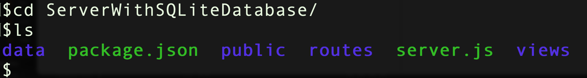
change directory into the data directory by executing, for example,
cd data
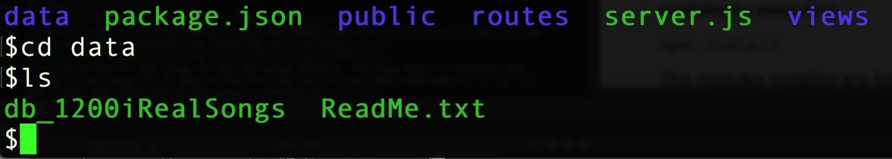
Launch the sqlite3 command line interface on the demonstration database by executing
sqlite3 db_1200iRealSongs
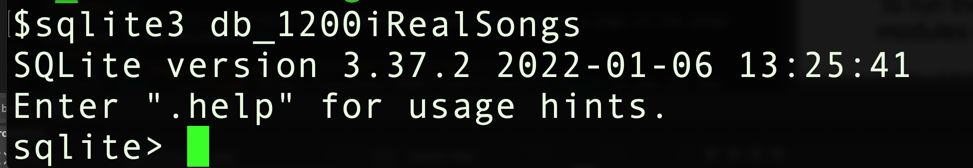
Execute
.tables
to see what tables are in the database and verify that there is a users table and then execute the following to show the current users as a table with column headings (notice that the command-line dot commands don't end in a semicolon that but SQL statements do:
.mode column
.header on
select * from users;
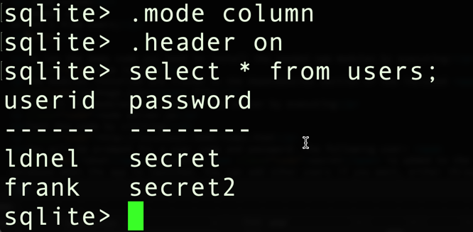
Next look at the schema for the users table by executing
.schema users
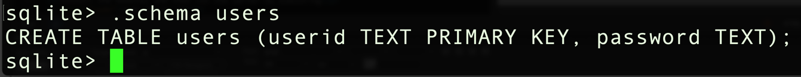
The schema shows the columns in the tables and their types which, for our purposes, would be either int, text, or real. Note that SQL is NOT a case-sensitive language.
Now create a userid and password for yourself and insert it into the users tables by executing
insert into users values ('your_user_id', 'your_password');
Make sure to notice that sql uses single quotes for strings and that SQL statements end in a semicolon. Verify that you have been added as a user by again selecting everything from the users table:
select * from users;
Now that you have your own userid and password in the database you can proceed with the remaining problems.
Leave the command line terminal open on the database so you can work with the database directly as you do the remaining problems.
(To exit out of the sqlite3 command line interface you can execute .exit)
You can learn about the .dot commands of the sqlite3 CLI by executing .help
I've also included a html document of useful dot commands with tutorial files. To learn about SQL syntax visit the SQL syntax section of the sqlite.org website:
https://www.sqlite.org/lang.html
Problem 2: Running The Code
Open a new command terminal on the directory where the demo code server.js file is located.
To run the demo code you need to install the needed npm modules by executing:
npm install
The modules installed are listed in the dependencies section of the included package.json file. (You may get a DEPRECATED warning but just ignore that.)
Once the npm modules are installed run the server by executing
node server.js
Test the code by visiting your openstack server at port 3000 on your assigned floating IP address for example:
http://134.117.130.12:3000/index.html
Alternatively if you are running on your own machine you can just access it using localhost:
http://localhost:3000/index.html
You should be promped by the browser for your userid and password. Use the one you added to the database's users table.
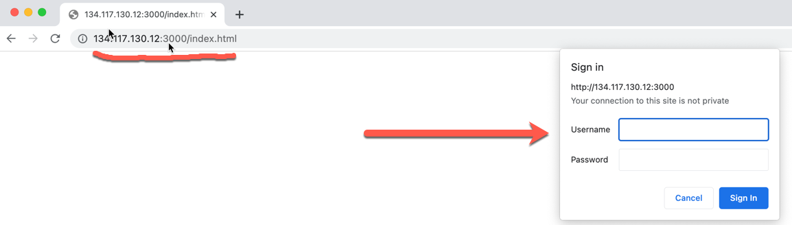
Once authenticated you should see the index.html page displayed:
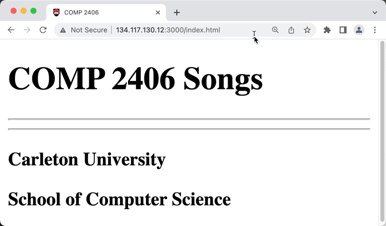
Now visit the /users page and you should see yourself listed among the users:
http://134.117.130.12:3000/users
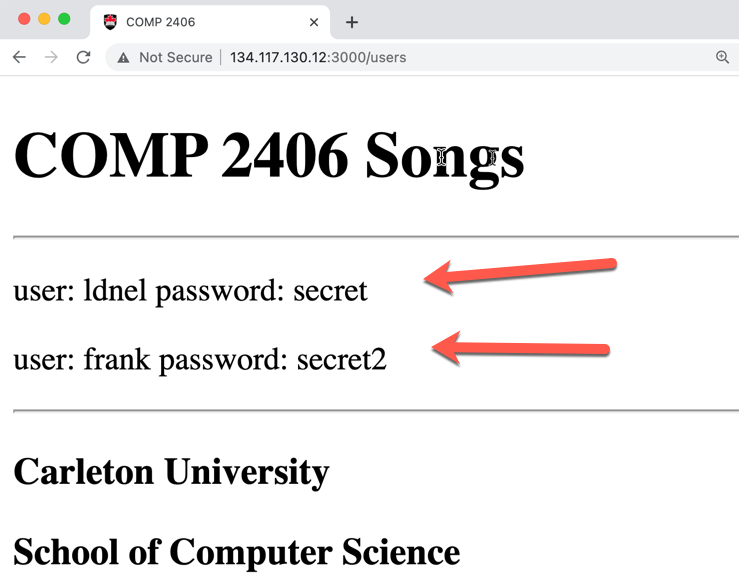
IMPORTANT: If you make changes to the users in the database and you want to log in as another user you will have to get your browser to "forget" the userid and password it has cached. You will have close and relaunch the browser. You may have to clear the browser's history too. Browsers can be tenacious about holding onto their current user information.
Problem 3: Finding Songs
With the server running visit the following URL (substitute your floating IP address or localhost if you are running on your own machine instead of openstack.)
http://localhost:3000/songs?title=Girl
You should see the songs in the database that contain the substring 'Girl' somewhere in their title
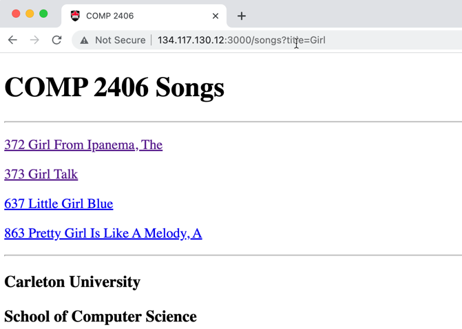
Each of the entries is a hyperlink you can use to visit the details of the song. Click on one of the song links to see the songs details. The song details contains the chords of the song all in one string with the bars of the song separated by '|' or '||' bar lines. The final bar of the song is denoted by '|]'.
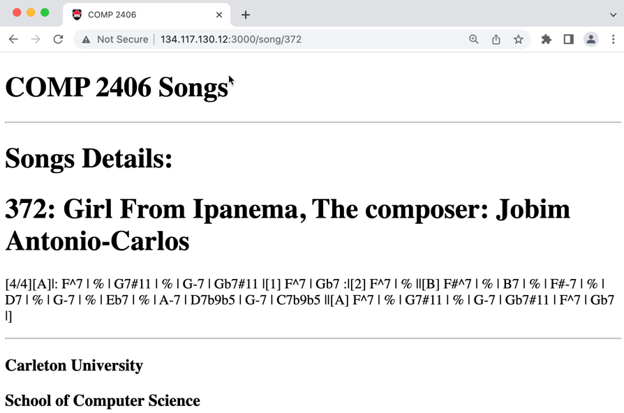
You can also see an individual song's details by using the song's id number for example:
http://localhost:3000/song/372
Study the code in the application (we would have gone over it in a lecture video as well).
For the problem we would like to be able to use the following URL to be find, say, all songs that contain the words 'My' and 'Love' as substrings in their title and in that order. That is, looks for songs whose title contains the substring 'My' somewhere and after that contains the substring 'Love'. (The match is NOT intended to be case sensitive.)
http://localhost:3000/songs?title=My+Love
Notice in the server.js file that the songs path is handled by the function routes.find
app.get('/songs', routes.find)
Locate that function in the routes/index.js file it likely has a piece of code that looks like the following:
exports.find = function(request, response) {
// /songs?title=Girl
console.log("RUNNING FIND SONGS")
let urlObj = parseURL(request, response)
let sql = "SELECT id, title FROM songs"
if (urlObj.query['title']) {
console.log("finding title: " + urlObj.query['title']);
sql = "SELECT id, title FROM songs WHERE title LIKE '%" +
urlObj.query['title'] + "%'"
}
db.all(sql, function(err, rows) {
console.log('ROWS: ' + typeof rows)
send_find_data(request, response, rows)
})
}
Modify this code so that the title can be a sequence of title words seperated by "+" sign in the URL so that we can search for songs using the ordered keywords as for example:
http://localhost:3000/songs?title=My+Love
To do this realize that in SQL the '%' character stands for "0 or more characters". Currently in the code the SQL creates a query that looks like:
select from songs where title like '%keyword%'
We want you to change it so that, in effect, the query would be
select from songs where title like '%keyword1%keyword2%keyword3%'
Use the console output on the server to see what the phrase 'My+Love' in the URL translates to and then have it appear as '%My%Love%' in the SQL statement. This should likely be a very simple change in the javascript perhaps replacing a plus sign or a blank with a % character.
Demonstrate a search based on the URL
http://localhost:3000/songs?title=My+Love
would find the song 'My One And Only Love' among others but that the URL
http://localhost:3000/songs?title=Love+My
would not find that song.
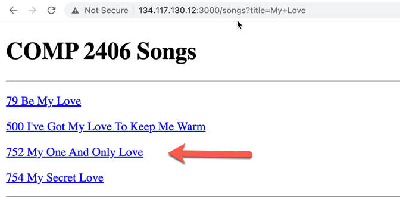
Problem 4)
Notice that currently a client can both find songs and also see who the current users are along with their passwords. We want to change this so that only clients with "admin" privileges can see the users but that everyone can search for songs.
To do this again open the sqlite3 command line interface on the db_1200iRealSongs database and again check the schema for the users table:
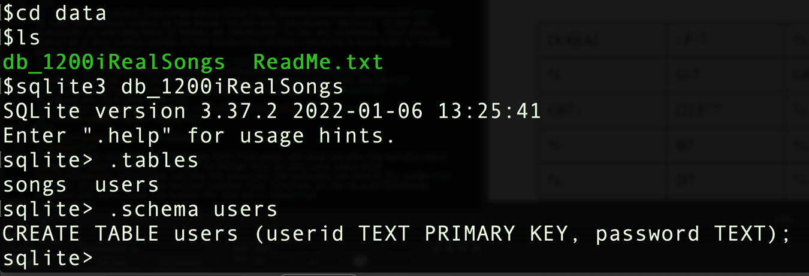
Execute the following SQL commands to add a new 'role' column to the users table
alter table users add column role text;
Next execute the following SQL statement to assign all users the role of 'guest'.
update users set role='guest';
(You can learn more about the alter and update SQL commands on the SQLite.org webite if you want.) Select everything from the users table to veryify the changes have been made:
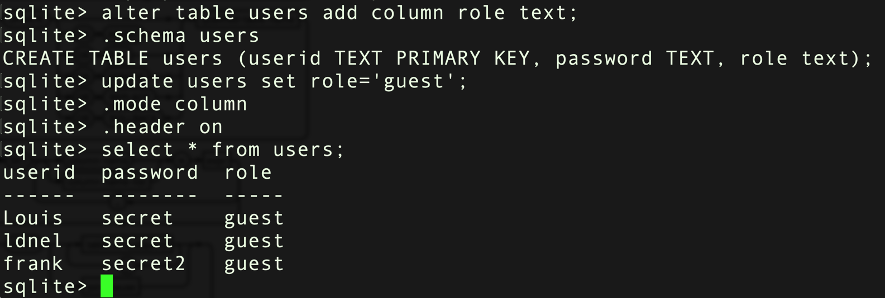
Next assign the userid you created in problem 1 the role value of 'admin' by exectuing an update like the following:
update users set role = 'admin' where userid like 'Louis';
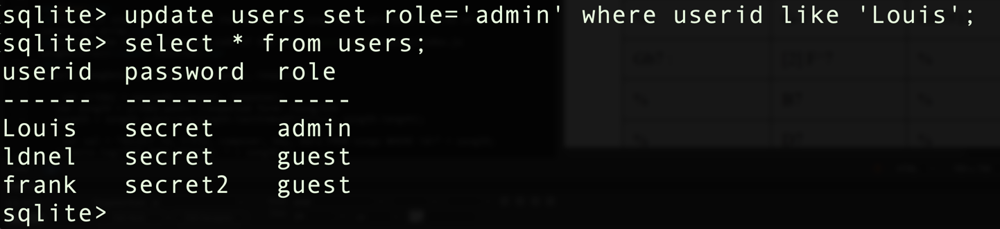
Finally make the changes needed in the code so that only clients logged in with admin privileges can see the users information. Here is a summary of the changes you will have to make.
1) Comment out the code at the start of the index.js file that creates a new users table and creates some default users since you have users in your database already now. (And we've modified the schema of the table.)
2) Locate in the authenticate middleware function the place where the userid and password is retrieved from the database. Modify the code so that the role is also retrieved. Add the retrieved user role as a user_role property to the middleware function's request object parameter. Likely in a statement like
request.user_role = retrieved_user_role
This way, the user_role be will accessible to any subsequent middleware functions that want to inspect it.
3) In the users route function start by printing to the console the user_role attached to the request object:
exports.users = function(request, response) {
// /send_users
console.log('USER ROLE: ' + request.user_role)
...
}
Verify that you can see the role when a get request for the users information is received:
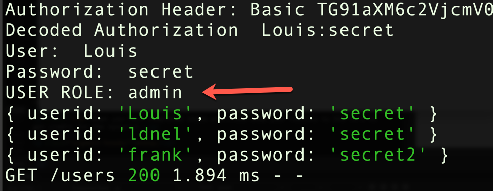
Finally modify the function so that an "error" response is returned to the client if they don't have admin privileges:
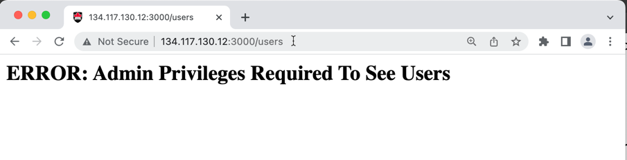
When you have completed these problems create a screen capture video, with sound, that demonstrates you've completed problem 3 and 4. Note you will have to close the Chrome browser window and open a new one and log in with a different user to illustrate the difference between a 'guest' and 'admin' user. Submit your code and readme.txt file (containing your YouTube link) to brightpace.